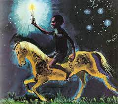
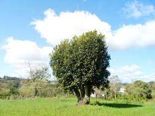
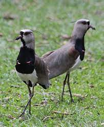
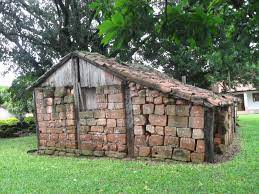
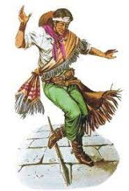
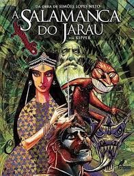

Lendas: São caracterizadas por sua natureza fantástica, onde não existem limites para a imaginação. São histórias contadas pelo povo, por qualquer pessoa e a qualquer momento. Exemplo: Negrinho do Pastoreio, Umbu, Erva Mate, Quero-quero, A casa de M’Bororé, Angoera e Salamanca do Jarau. Vejamos algumas:

Negrinho do Pastoreio
No tempo dos campos abertos, não havia entre eles nem divisas nem cercas, havia um estancieiro muito rico e muito mau. Não dava pousada a ninguém e não emprestava cavalo a um andante. Só para três viventes ele olhava nos olhos: para o filho, para um cabos-negros, que era o seu parelheiro de confiança, e para um escravo, que todos chamavam somente o Negrinho. O Negrinho se dizia afilhado da Virgem, Senhora Nossa. O estancieiro se comprazia em maltratar o Negrinho que trabalhava dia e noite. Um dia o estancieiro atou carreira com um seu vizinho: o tiro era trinta quadras, a parada, mil onças de ouro. No dia aprazado para a carreira, representado o estancieiro lá estava o Negrinho montado num cavalo baio. Ele perdeu a carreira. O estancieiro enfurecido pagou a aposta e retirou-se para casa, mandou amarrar o Negrinho no tronco e dar-lhe uma surra de relho. Na madrugada saiu com ele e quando chegou no alto da coxilha falou assim: - Trinta quadras tinha a cancha da carreira que tu perdeste: trinta dias ficará aqui pastoreando a minha tropilha de trinta tordilhos negros... O baio fica de piquete na soga e tu ficas de estaca!
Veio o sol, veio o vento, veio a chuva, veio a noite. O Negrinho, varado de fome e já sem força nas mãos, enrolou a soga num pulso e deitou- -se encostado a um cupim. O Negrinho tremia, de medo, porém de repente pensou na sua madrinha Nossa Senhora, sossegou e dormiu. Então vieram os graxains ladrões e cortaram a guasca da soga. O baio fugiu a galope, e toda a tropilha com ele. Assim o Negrinho perdeu o pastoreio. E chorou. O estancieiro mandou outra vez amarrar o Negrinho pelos pulsos a um palanque e dar-lhe outra surra de relho. Depois lhe ordenou que fosse campear o perdido.
Rengueando, chorando e gemendo, o Negrinho pensou na sua madrinha Nossa Senhora e foi ao oratório da casa, tomou uma vela acesa e saiu para o campo. Quando os galos estavam cantando encontrou os cavalos todos juntos. O Negrinho montou no baio e tocou por diante a tropilha, até a coxilha que o seu senhor lhe marcara. O Negrinho deitou-se cansado e, enquanto dormia, veio o menino, filho do estancieiro e espantou a cavalhada. O tropel acordou o Negrinho e o menino maleva foi dizer ao seu pai que os cavalos não estavam lá... O estancieiro mandou outra vez amarrar o Negrinho pelos pulsos, a um palanque e dar-lhe outra surra de relho. O Negrinho chamou pela Virgem sua madrinha e Senhora Nossa, deu um suspiro triste e pareceu que morreu. Como já era de noite e para não gastar a enxada em fazer uma cova, o estancieiro mandou atirar o corpo do Negrinho sobre um formigueiro para que fosse devorado pelas formigas. Passou a noite e veio a manhã e o sol encoberto. E três dias houve cerração forte, e três noites o estancieiro sonhou com o Negrinho.
A peonada bateu o campo, porém, ninguém achou a tropilha e nem rastro. Então, o senhor foi ao formigueiro, para ver o que restava do corpo do escravo. Qual não foi o seu grande espanto, quando chegado perto, viu na boca do formigueiro o Negrinho de pé, com a pele lisa, perfeita, sacudindo de si as formigas que o cobriam ainda!... O Negrinho, de pé, e ali ao lado, o cavalo baio e ali junto, a tropilha dos trinta tordilhos e fazendo-lhe frente, o estancieiro viu a madrinha dos que não a têm, viu a Virgem, Nossa Senhora, tão serena, pousada na terra. A notícia do “milagre” se espalhou e então, muitos acenderam velas e rezaram o Padre-nosso pela alma do judiado. Daí por diante, quando qualquer cristão perdia uma cousa, o que fosse, o Negrinho campeava e achava, mas só entregava a quem acendesse uma vela, cuja luz ele levava para pagar a do altar da sua madrinha, a Virgem, Nossa Senhora. Desde então e ainda hoje, conduzindo o seu pastoreio, o Negrinho anda sempre à procura dos objetos perdidos, pondo-os de jeito a serem achados pelos seus donos, quando estes acendem um coto de vela.
Umbu

O umbu é uma das árvores típicas do Rio Grande do Sul. A lenda diz que Deus chamou as árvores e mandou que cada uma escolhesse as características que desejavam possuir. Depois do pau-ferro, da laranjeira, do jacarandá, do carvalho, do espinilho, da timbaúva, do salgueiro, da paineira e do pinheiro, que escolheram características como a dureza do tronco, a beleza e a longevidade, chegou a vez da última árvore dizer como desejava ser.
- “Quero dar sombra, muita sombra a todos os homens cansados. ”
- “Sombra todas as árvores dão”, disse o Senhor.
- “Sim, eu sei, mas quero mais ampla e a mais densa das sombras. Quero ser o símbolo da hospitalidade, o abrigo do homem cansado. Mas também quero ter a madeira frágil para que nunca possam da minha carne fazer a cruz para crucificar o Teu Filho”.
Foi assim que no reino vegetal, surgiu a árvore com a maior e mais densa copa, produzindo a mais acolhedora sombra entre todas as árvores e a madeira tão frágil que sequer segura os pregos.

Erva Mate
Um grande cacique, da tribo dos Tapes, de muita fama e sabedoria, não tinha filhos que pudessem sucede-lo na chefia da tribo, tinha apenas uma filha muito bonita, a Caá-Yari. Ao envelhecer o cacique passou a chefia da tribo ao mais valente guerreiro, por quem Caá-Yari estava apaixonada, em segredo. Seguindo o costume da tribo, o novo cacique convidou a jovem Caá- -Yari para acompanhá-lo numa caçada. A jovem recusou o convite para ficar cuidando do pai a quem era muito afeiçoada. O velho cacique percebeu que a filha estava triste por não poder acompanhar o seu amado nas aventuras da caça, da pesca e da guerra, assim pediu para que Tupã lhe indicasse um amigo para lhe fazer companhia, liberando a filha para seguir seu amado.
Tupã atendeu o pedido do velho cacique e lhe indicou uma árvore muito verde e lustrosa, ensinado a preparar o porongo, fazer o tacuapi (canudo de taquara para sorver a infusão), preparar as folhas da erva, secando-as, torrando-as e esmigalhando-as para fazer uma deliciosa bebida, o caá-y, o mate, o chimarrão. O cacique ganhou assim um companheiro para todo o dia e a filha Caá-Yari pode seguir seu amado. Quando Caá-Yari morreu, ela foi transformada em protetora dos ervais gaúchos.
O Quero-Quero

Quando a Sagrada Família (José, Maria e o filho Jesus) fugia de Israel para o Egito, fugindo dos soldados do rei Herodes, precisou, muitas vezes, se esconder no campo para não ser encontrada pelos perseguidores. Num determinado dia os soldados romanos estavam próximos e a Virgem Maria pediu para que todos os bichos fizessem silêncio a fim de não denunciar a posição da Família. Todos obedeceram menos um passarinho ingênuo que, por gostar tanto de cantar, repetia para Maria: quero-quero cantar. O pássaro desobediente continuou cantando. Por sorte, os soldados não deram atenção aquele bichinho matraqueador e foram embora. Maria, Mãe de Jesus, chamou o tal passarinho e lhe passou uma reprimenda dando-lhe como castigo a sina de sempre cantar a mesma canção: quero-quero, quero-quero, quero-quero. Por mais que ele se esforce, não conseguirá produzir som diferente desse. Para o gaúcho o quero-quero é o sentinela dos pampas e a ave símbolo do Rio Grande do Sul.

A Casa de M’Bororé
É uma lenda de inspiração missioneira, típica do Rio Grande do Sul. M’bororé era um índio missioneiro muito amigo dos jesuítas, leal e temente a Deus. Os jesuítas teriam construído uma casa branca, sem portas e sem janelas, onde guardaram seus tesouros. Quando as missões foram destruídas e os jesuítas tiveram que fugir, deixaram o fiel índio M’bororé encarregado de vigiar o tesouro (ouro, prata, pedras preciosas, alfaias, resplendores de santos, cálices de ouro maciço e moedas de ouro). O índio velho ficou à espera da volta dos jesuítas, como eles demoraram muito, o índio ficou mais velho, adoeceu e morreu. Mesmo morto jamais deixou que alguém aproximar-se da casa. Muita gente já viu a casa, mas ninguém conseguiu se aproximar. O local é marcado, mas quando voltam ao local, com outras pessoas e com ferramentas, a casa não está mais lá. Os conquistadores hispânicos acreditavam na existência de uma cidade de Eldorado onde havia muitos tesouros escondidos.
Angoéra

Havia no Pirapó, região missioneira, um índio muito valente, esquivado e arredio. Era um homem triste que não gostava de companhia de outros seres vivendo escondido nos matos. Os padres jesuítas tanto insistiram que convenceram o índio a se converter à fé católica, assim foi batizado com o nome de Generoso. Com o batismo o índio, que era triste, ficou alegre e passou a gostar de festas, danças e música. Ficou amigo dos padres e ajudou a construir igrejas nas Missões. Quando morreu, já muito velho, Generoso não quis ir embora e, assim, a sua alma ficou por aí, participando de festas e se intrometendo nas atividades que tenham música e dança. Quando uma viola toca sozinha, uma vela se apaga com uma lufada de vento sem saber de onde veio, ou quando uma porta range sem ninguém tocar nela, sabe-se que o índio Angoéra, o Generoso, está presente.

Salamanca do Jarau
No Povo de Santo Tomé, na Argentina, dominado pelos padres jesuítas, havia um sacristão que morava numa casinha de pedra nos fundos da igreja. Num dia de muito calor, no verão, o sacristão foi até a lagoa para refrescar-se. Levava junto a sua guampa, que lhe servia de copo. Chegando na lagoa viu que ela fervilhava e dela saia um vapor estranho. Subitamente saiu do meio desse vapor uma lagartixa com a cabeça luminosa, era a Teiniaguá, da qual já ouvira falar e sabia que tinha parte com o diabo, o Anhangá-Pitã que tentava arrastrar os homens pro inferno. Sabia, também, que a Teiniaguá era uma princesa moura muito bonita que jamais fora tocada por qualquer homem e, o primeiro que conquistasse o seu amor seria feliz para sempre.
Assim, num repente, aprisionou a Teiniaguá na guampa e voltou correndo para casa. Passou o dia na cela esperando chegar a noite. Assim que o sol se foi, abriu a guampa e libertou a lagartixa que se transformou na bela princesa que lhe pediu vinho. Deu-lhe o vinho sagrado da missa. Passou a noite com a princesa e pela manhã recolocou-a na guampa, já transformada em lagartixa, novamente. Dia após dia repetiu a proeza, até que os padres descobriram o crime do sacristão. A princesa fugiu, como lagartixa, para as barrancas do rio Uruguai. O sacristão foi preso e condenado à forca, devendo ser executado na frente da igreja que ele havia profanado. No dia da execução a Teiniaguá foi salvar o seu amado. Houve um grande estrondo, fumaça e enxofre no local da execução e quando a fumaça baixou, o sacristão não estava mais ali: fora levado pela princesa moura para as barrancas do rio.
Perambularam por alguns dias até encontrar o Cerro do Jarau, no Quaraí, onde encontraram uma caverna profunda e dentro dela puderam viver, os dois. A caverna do Cerro do Jarau ficou encantada e passou a ser chamada de Salamanca, que significa gruta mágica. Diz a lenda que quem conseguir achar a gruta e passar pelas sete provas, ficará com o “corpo fechado”, tendo para o resto da vida sorte no amor e no dinheiro. Conta a lenda que o sacristão e a Princesa Moura – Teiniaguá – são os pais dos primitivos gaúchos.